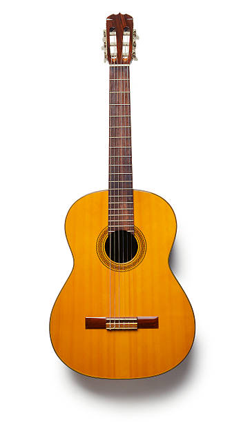
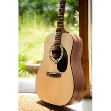
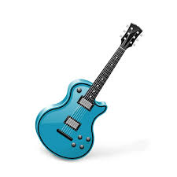

Gitar Türleri

Klasik Gitar
Naylon telli bu gitar genellikle klasik müzikte kullanılır. Parmakla çalınır ve geniş gövdesiyle yumuşak bir ses verir.

Akustik Gitar
Çelik telli olan bu gitar, pop, rock ve folk gibi türlerde yaygındır. Hem pena hem de parmakla çalınabilir.

Elektro Gitar
Amfiye bağlanarak çalınır. Genellikle rock, metal ve blues gibi tarzlarda tercih edilir.